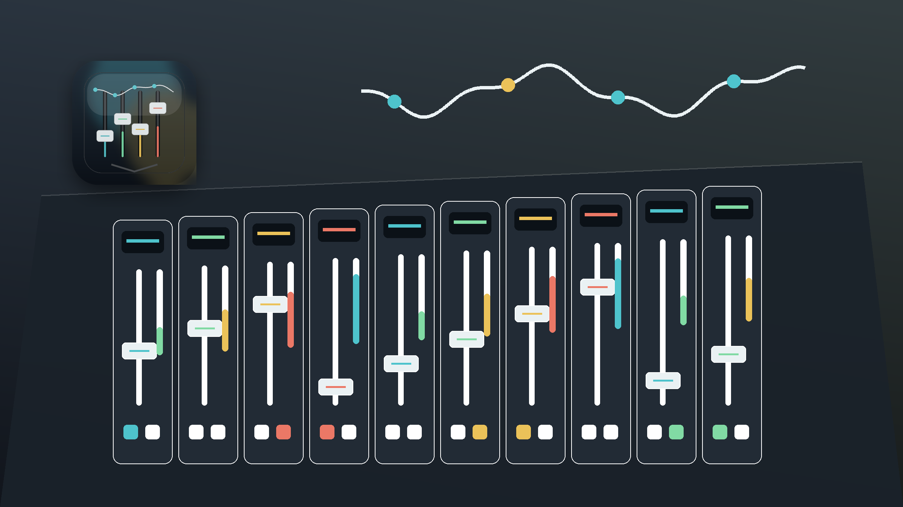

Channel strips
Eight input strips with faders, meters, mute, solo, select, and channel naming.

Native macOS mixer remote
A SwiftUI rebuild of the original VMix mixer-control idea from space928/VMix, redesigned for macOS with CoreMIDI, mock MIDI, profiles, and a testable mixer core.
Origin
The original VMix project by space928 is a WPF/.NET virtual mixer control application for MIDI-enabled digital mixers. Its public README describes goals such as a flexible mixer UI, extensible MIDI translation, scene storage, fader panels, selected-channel processing, dark theme support, Yamaha 02R support, and eight virtual DCA fader groups.
The historical WPF/C# project remains under its own NPOSL-3.0 licensing. This repository contains a new Swift/macOS implementation and does not copy WPF, XAML, or System.Windows code.
Install
The formula builds the SwiftPM app target, stages a macOS app bundle, and installs a `vmix-remote` launcher.
brew tap frederikschulze1701-blip/vmixremote
brew install vmix-remote
vmix-remote
MVP
Eight input strips with faders, meters, mute, solo, select, and channel naming.
Control Change, Note On/Off, SysEx message handling, activity logs, and CoreMIDI endpoints.
All hardware-facing behavior can be tested without a connected digital mixer.
Codable JSON profiles with import, export, first-run defaults, and legacy path migration.
Architecture
VMixRemote separates mixer state, MIDI mapping, persistence, MIDI backends, and SwiftUI views into independent SwiftPM targets.
Read architecture notes